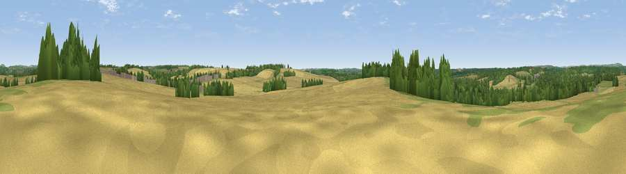

Viewpoint near Longparish
#37183 in England · top 51% of its area beats it · near LongparishWhere it is
The exact computed spot (SU 45485 44862). Click the marker for map links.
The view, rendered

A 360° render of this exact spot computed from the terrain model, tree cover and land cover — summer colours, afternoon light, calibrated against photographs of famous viewpoints. Real trees, hedges and buildings will differ in detail.
The panorama
Grey silhouette: terrain skyline in each direction (720 bearings, Earth curvature and refraction included). Dashed green: skyline with trees (+15 m) and buildings (+8 m) as obstacles. Blue strip: how far the ground is visible on each bearing.
Where the view opens
Wedge length = distance to the farthest visible ground on that bearing (vegetation-aware). Rings at 10, 25 and 50 km.
What fills the view
55% cropland · 22% grassland · 21% woodland ·
Angular shares of the visible panorama (visual magnitude), not map area. Landscape diversity 0.45 (0–1 Shannon).
Key numbers
More beautiful places nearby
The staircase of upgrades: each row has a higher view potential than everything closer. Driving times are estimates from straight-line distance, calibrated against real road routing — check an actual route before setting out.
| Place | Direction | Drive | Score |
|---|---|---|---|
| Tidbury Rings | SSE · 2 km | ~5 min | 44.8 |
| Viewpoint near Chilbolton | SW · 10 km | ~20 min | 59.1 |
| Viewpoint near Stockbridge | SW · 12 km | ~22 min | 63.3 |
| Viewpoint near Old Burghclere | N · 12 km | ~23 min | 67.5 |
| Ladle Hill | NNE · 12 km | ~23 min | 70.5 |
| Beacon Hill | N · 12 km | ~23 min | 76.7 |
| Martinsell viewpoint | NW · 33 km | ~51 min | 76.9 |
| Viewpoint near Buriton | SE · 36 km | ~54 min | 80.0 |
51.20117, -1.35037 · source: osm peak · position refined by local search. Computed location — check access rights before visiting.